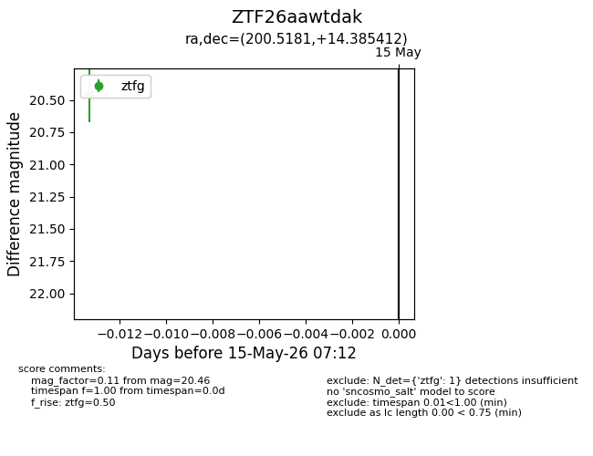
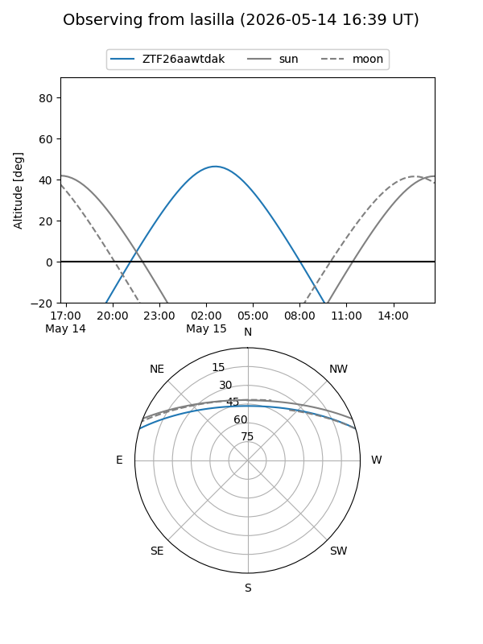
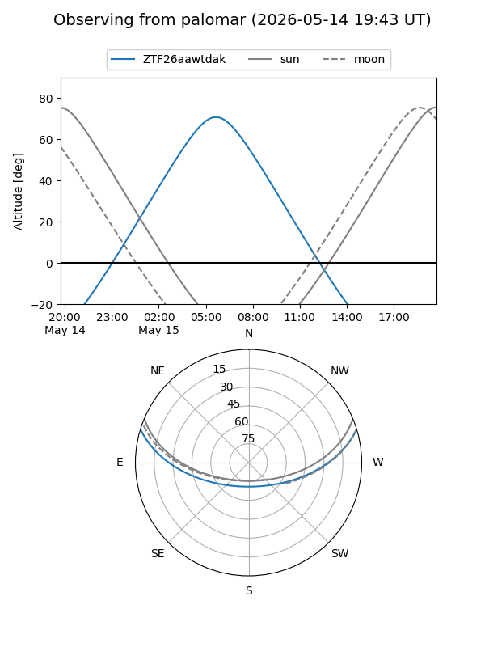

ZTF26aawtdak
Target ZTF26aawtdak at 2026-05-15 07:14
Aliases and brokers:
FINK: link
Lasair: link
ALeRCE: link
alt names
ZTF26aawtdak (ztf,fink_ztf)
Coordinates:
equatorial (ra, dec) = 200.5181,+14.38541
equatorial (HMS+DMS) = 13:22:04.34,+14:23:07.48
galactic (l, b) = (333.7223,+75.39335)
Flags:
Photometry:
last ztfg=20.46
1 ztfg detections
Lightcurve

Visibility


Additional plots